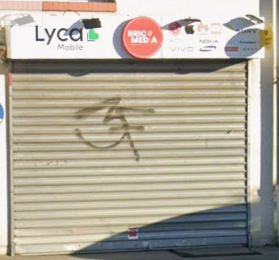
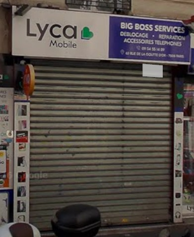

Transgourmet France — Siège social
Installation de Microsoft 365 sur les postes des utilisateurs. Vérification des versions d’Office installées et migration d’Office 2019 vers Microsoft 365.
Au cours de mes différents stages, j’ai développé des compétences allant de l’administration d’infrastructures réseau à la maintenance électronique de précision. Ces expériences m’ont permis d’intervenir sur des environnements techniques variés et de contribuer au bon fonctionnement des services informatiques.
Installation de Microsoft 365 sur les postes des utilisateurs. Vérification des versions d’Office installées et migration d’Office 2019 vers Microsoft 365.
Installation de GRR, un outil de gestion des réservations et des ressources. Migration d’une ancienne base de données et configuration d’un serveur web.

Réparation matérielle et logicielle de smartphones, de tablettes et d’ordinateurs. Interventions de micro-soudure et réparation de cartes mères.

Réparation matérielle et logicielle de smartphones, de tablettes et d’ordinateurs. Interventions de micro-soudure et réparation de cartes mères.